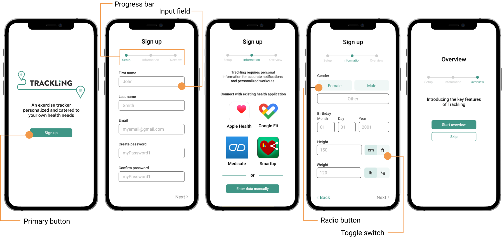

Helping users understand their physical capabilities through a health tracking application.
Contribution
Interface design
Exploratory research
Prototyping
Team
Angela Lee
Catelyn Sue
Sophia Wang
Type & Time
School project
(2 Months
Jul - Aug 2021)
Tools
Figma
Miro
Overview
Introduction
A 2 month school project that is separated into two parts: research and design. The design process first examines a relevant problem through research then focuses on creating an easy-to-use and accessible solution that can help our users mitigate the problem.
Problem
Many seniors (age 75 and above) lack physical awareness and do not understand their physical capacity to be active thus pushing themselves too hard and causing unexpected injuries or falls.
Design Space
How might we help seniors stay within their physical limits?
Solution
Trackling is a fitness support app that helps seniors be informed about and stay within their physical limits by collecting user's health data on the regular to better understand their current conditions.
Research
Affinity Map
Key Observations
Using out research on Mobility and Movement we compiled all our data on Miro to determine the top 2 problems within our topic domain.
Using Nielsen Norman's severity rating, our group narrowed down to two problem areas: Dependence and Physical Awarness. Ultimately we chose to focus on physical awarness because we had stronger supporting evidence from interviews and primary sources.
Currently, existing solutions focus more on progress tracking (km/h pace, steps, or distance travelled, time elapsed) than helping users understand what level/intensity of exercise is within their safe zone .
Design Revisions
Once we finised our final design and prototype, we completed two different tests to evaluate issues that needed to be fixed.
Heuristics Evaluation
Using Jakob Nielsen's 10 usability heuristics for user interface design (https://www.nngroup.com/articles/ten-usability-heuristics/), we discovered that the heuristic we neglected most throughout the application was helping users recognize, diagnose, and recover from errors.
An example of this issue occuring is in the Sign-up process where the user clicks on the 'next' button. Without completing all of the fields, the interface does not generate change nor does it notify the user of the error (figure 1). The inability to help users recognize errors can cause fustrations to those who do not understand the reason of why they cannot continue to the next step.
A simple fix was to add a red border over unselected buttons or incomplete fields with an error message below to inform the user of the problem (figure 2).
figure 1figure 2
User Testing
Due to the absence of an iPhone 11 and the imprecise aspect ratios on an alternative mobile device, testing was conducted on laptop.
Prominent Issues
Although visual design is crucial in helping seniors use technology, through our testings we learned that seniors paid more attention to content and instructions rather than the visual cues.
Font size below 14
Low contrast colours
Inaccurate survey options
Jargon
Others
Progress bar
Element hierarchy
Radio buttons
In our final prototype we ensured that the language and instructions were clear, yet enough to maintain a simple-to-read interface.
Solution
Trackling fitness support app that utilizes user’s health data from in-app logged activity together with synced health applications to provide personalized workouts, notifications and visualized progress tracking . Trackling also logs users’ activity progress through performance metrics such as distance travelled, average moving pace during an activity, elevation gain on the route, and total time elapsed for an activity.
Goal
Notify users when they are exceeding their physical limits based on the safe thresholds of their active heart rate in beats per minute (BPM) and age group, for low, moderate, and high intensity activities.
Design Considerations
To create an accessible application suitable for seniors , the design considerations include high contrast colour combinations, larger standard font, and formal language understood by our users.
User Persona
Sam, a 75 year old grandmother, has just began to exercise after staying at home for 3 months. She is excited to go on walks around the neighbourhood but is afraid of exceeding her physical capabilities and causing injuries.
Onboarding

Health Application Data Sync
In the onboarding, health data from other exisiting applications can be synced with Trackling to create a more seamless and personalized health tracking experience using information, such as average resting BPM, steps taken in a day, week or month, and other performance-based statistics.
Navigation Page
Activity Routes
From suggested workouts in the home page, the user is led to the Workout page where they are given walking routes within their vicinity - according to the personal information gained through onboarding.
Workout Recorder
Real-Time Health Report
The most crucial feature of our application is providing users with real-time notifications during their workout depending on their 'zone'. These 'zone' associate with the user's heart rate and appear on on top of the display:
Green: heart rate under 102
Yellow: heart rate under 128
Red: heart rate above 128.
If the user enters the yellow zone, the system will alert with a notification and in the red zone, there will also be audio and haptic alerts to notify the user to take a break until their BPM goes into the safe zone again.
While the user is taking a break, they can visually watch their zones and heart rate change.
Post Workout
Activity Survey
Once an exercise is complete, the application prompts a post workout survey to understand the user's emotions and physical state.
Question #1: "How are you feeling"
Question #2: "How was your walk"
Question #3: If Q2 was...
Effortless/ Easy -> Option of another workout
Okay -> Back to home screen
Hard/ Extreme -> Reason of difficulty is inquired
The post activity survey is an important component of our application as it allows Trackling to extract information and recommend workouts that are catered to the users physical ability and limits.
Unlike the other group projects I have completed in the past where each team member had a specific role or skill they excelled at, this time I look on a leadership role where I helped position the group in the right direction during the initial stages of the design process and later overlooked the whole project while focusing on my own individual tasks.
If I had more time, I would also look into usability as a whole including the mobile device itself and whether the features on the application are feasible while a user is active and exercising.